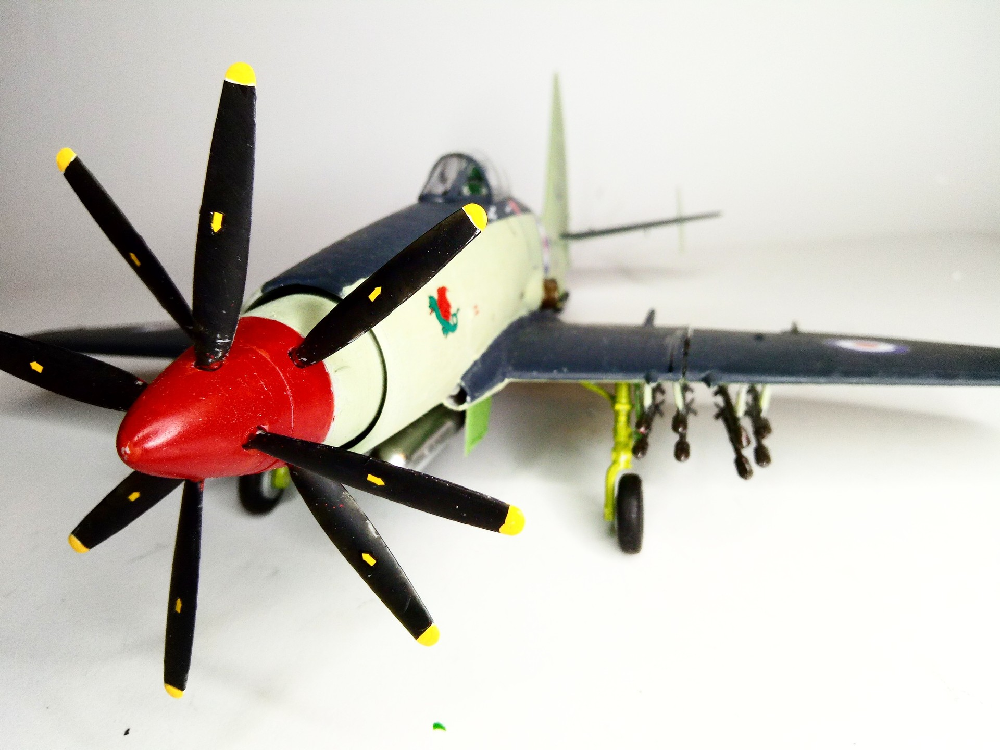
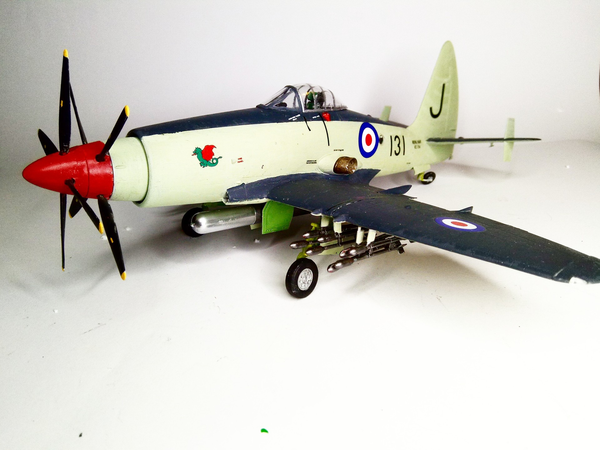
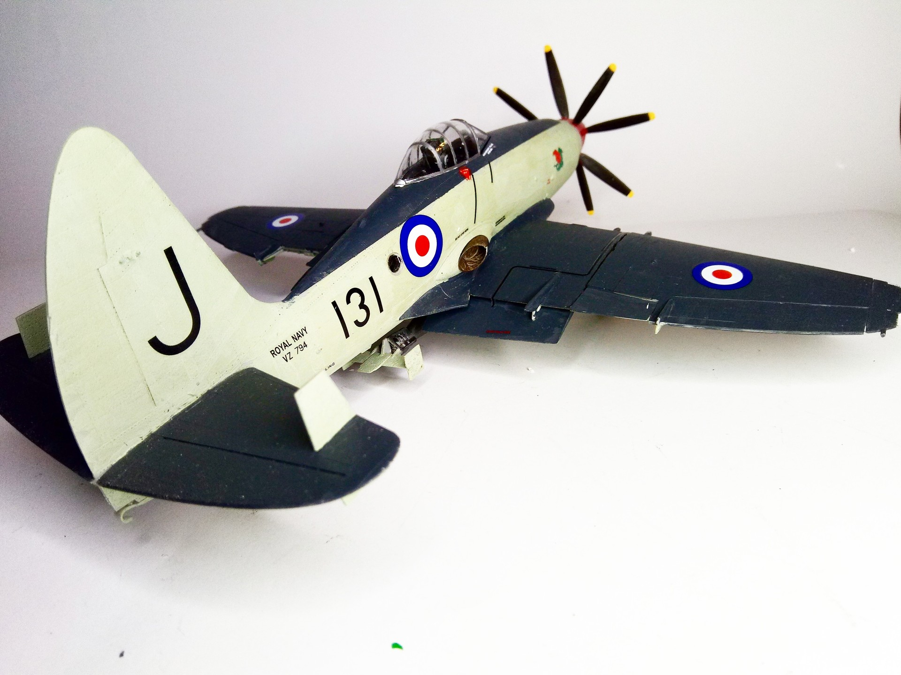

Aerei · scale model archive
Westland Wyvern
Westland Wyvern — Kit: Trumpeter, Scale: 1/48. #Westland #Wyvern WZ974 Number 827 Sqn HMS Eagle 1955 Intriguing look, Trumpeter even provided the gears…

Photo gallery


English description
#Westland #Wyvern
WZ974 Number 827 Sqn HMS Eagle 1955
Intriguing look, Trumpeter even provided the gears for the contra-rotating propellers
#1/48 #Trumpeter
Descrizione italiana
WZ974, No. 827 Sqn, HMS Eagle, 1955. Aspetto intrigante; Trumpeter ha persino previsto gli ingranaggi per le eliche controrotanti.